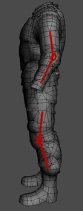
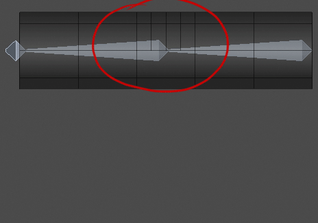
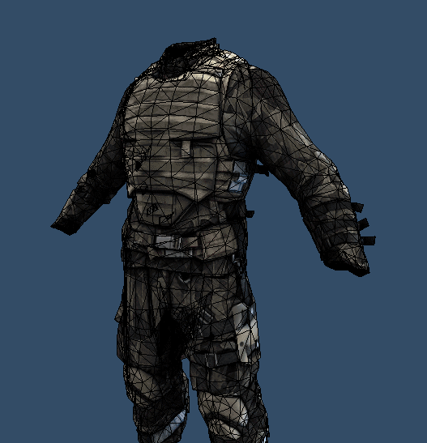
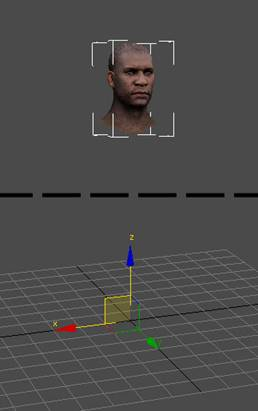
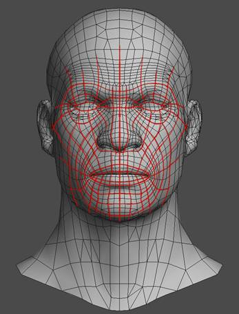
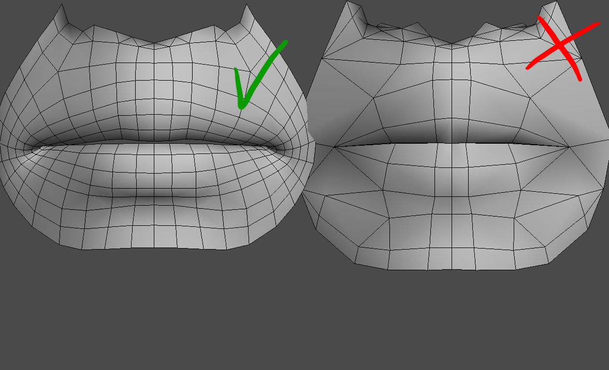
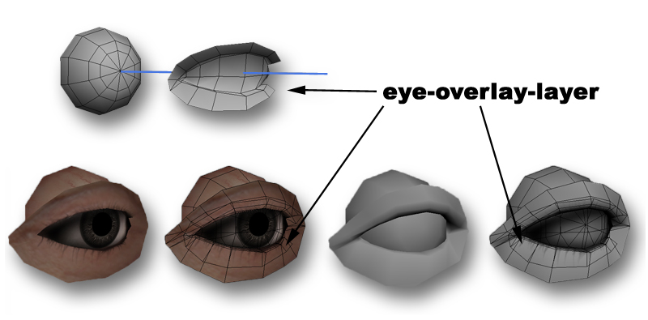

Overview
Sections
This document is a general overview of the topics that need to be taken care of when modeling a character for CRYENGINE. It also contains links to more detailed sections in the documentation.
A character is a combination of geometry data that is attached to a skeletal hierarchy. Examples include a human body, a shark, an alien, a horse, or a rope. The information below is mainly for humans, but can often be implemented in other types as well.
Bodies
The most important part of the low-poly model is the outer shape. It should follow the shape of the high-res model as much as possible. The normalmap will take care of all the details that are inside of this boundary.
To make the body model work correctly in the game, ensure the following:
- The characters geometry is connected to a skeleton and is exported in the format.
- If the character is used as an AI, make sure that the physics settings and IK Limits are correctly set up.
- The character geometry is facing the positive y-direction in 3ds Max or the z-axis in Maya.
Although it is not vital for the character to work properly, it is a good rule of thumb to avoid possible downstream problems (animations, attachments).
Additional Advice for a Clean Character Model
- Make sure that the geometry matches the existing skeleton, from the big shapes down to the details (fingers).
- Choose a pose that suits the range of motions that the character needs to achieve.
- To improve the general deformation of the model, make sure that all the joints (arms, shoulders, legs) are slightly angled.
- It is good to choose angles that are the average of the most used poses. A joint should never be stretched or angled to its maximum, but always kept in a natural in-between pose.
- It is also important that the pose looks natural and comfortable. This is just a rule of thumb rule and can't be nailed down as it always differs with the requirements of the character.

- Add enough polygons to the joints to ensure a soft deformation.

General Modeling Workflow Tips
- Start with a rough model to test the shapes and volumes in the game. The goal should be to identify and define the look of the gameplay relevant visual components early on.
- Make a mid-poly model.
- Rig it roughly and do some test runs in the game. Don't worry about the polygon count at this stage.
- Don't start with the high poly before you are satisfied with the shape and volumes.
- After the high-poly model is done, it is good to start using the mid-poly model as a base for the low-poly. If you are using Mudbox/Zbrush, you can use low iterations (1,2, or 3) as a base for the low-poly model.
- Shapes are very important: Modeling details, which do not define the shape of the overall silhouette, are most likely a waste of time. Normal maps will be more efficient in 90% of the cases. Use the polygons for keeping the model's shape interesting and detailed.

Setup in Sandbox
Human character bodies should be loaded in the Character Tool and fitted with various attachments (bags, head, helmets).
Please read more about it in the description of the Character Tool.
Heads
To make the model work correctly in the game, ensure the following:
- The head geometry is placed on the body and does not clip through the neck or other geometry.
- The head geometry is connected to a skeleton and is exported in the .chr format.
- The head geometry is exported without errors (Multiple Vertex Colors and Degenerated UVW messages can be ignored, however) otherwise, the morphs will not be displayed.
- The head geometry is facing the positive y-direction in 3ds Max.
- The head geometry's pivot position is at 0,0,0 and its rotation is at 0/0/0 (refer to the image below). Although this is not vital, it helps to avoid possible downstream problems (animations, attachments).
- All morph targets need to have their pivot point at the same relative position. Note: If all the morphs behave correctly after Reset XForm has been applied, they will also behave correctly in the game.

Head's pivot position at 0/0/0
General Modeling Workflow Tips
- Use good edge-loops for better facial animation results (refer to the image below):

- Do not model spiky lips. Use edgeloops to construct nice lips to make sure that the deformation looks good, even when the mouth is wide open.

- Make sure that the lip volumes inside the mouth are also right. This is vital for good and realistic deformation.
- Make sure that the eyelids perfectly fit the eyeballs. Unclean eyelids can result in clipping and crossed eyes.
- An Eye-Overlay layer is a very good way to improve the shading of the eyes, but it is optional:
- The Eye-Overlay technique is based on an overlay polygonal layer, with an alpha-masked area to fake soft shadows onto the eyeballs.
- The Eye-Overlay geometry is usually the same as the eye leashes, to save draw calls.

For further information on using the PolyBump Application, refer to the , , , and the tutorial.